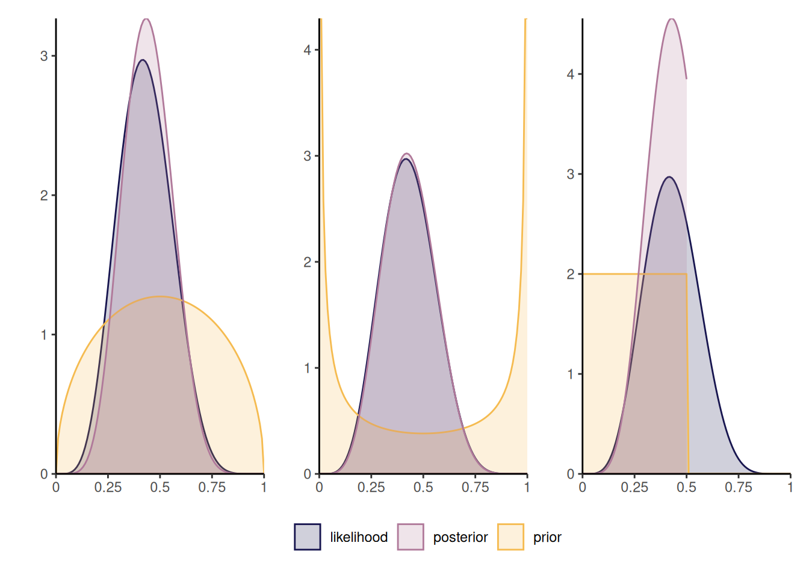
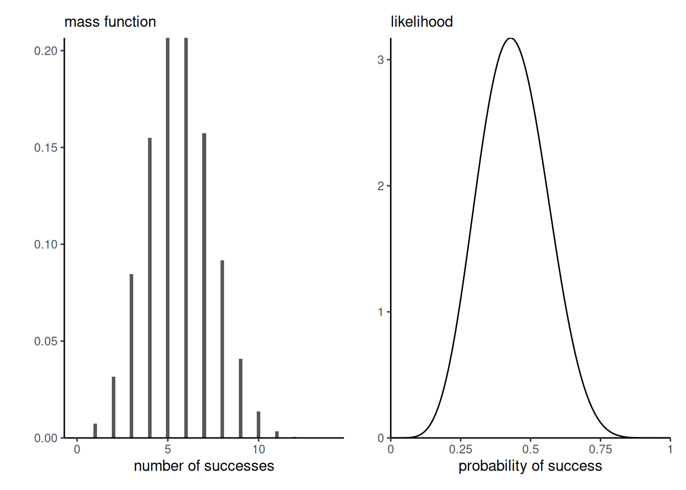
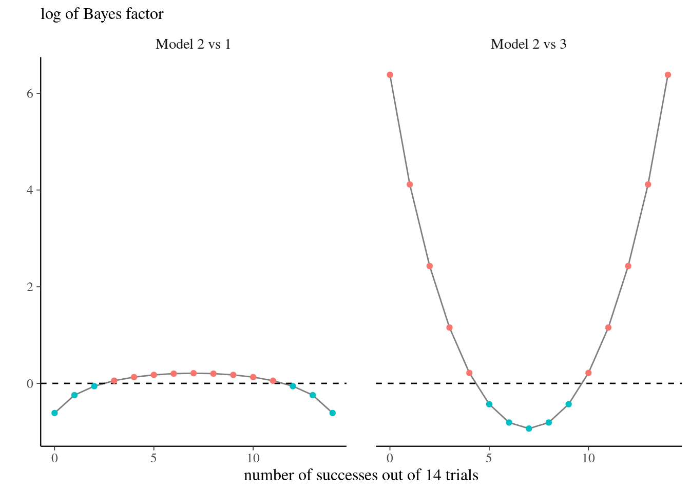
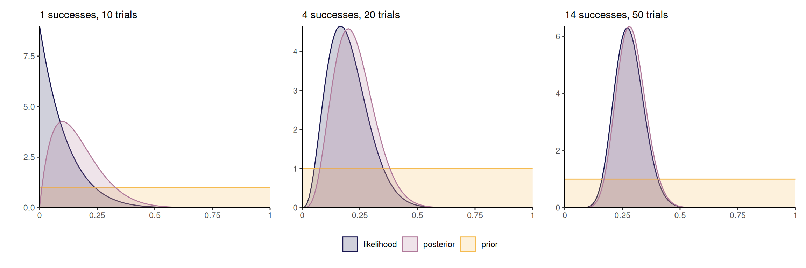
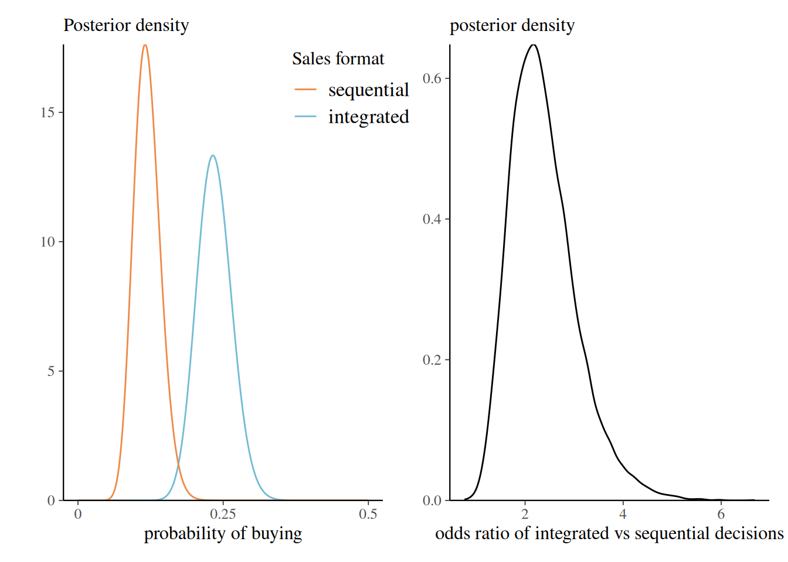
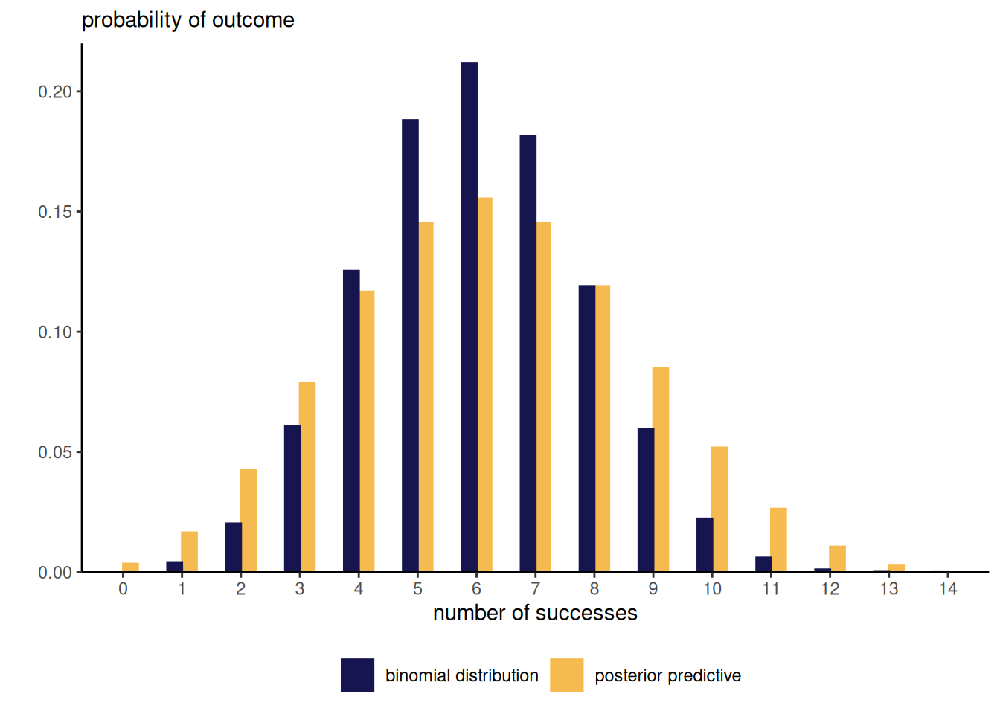
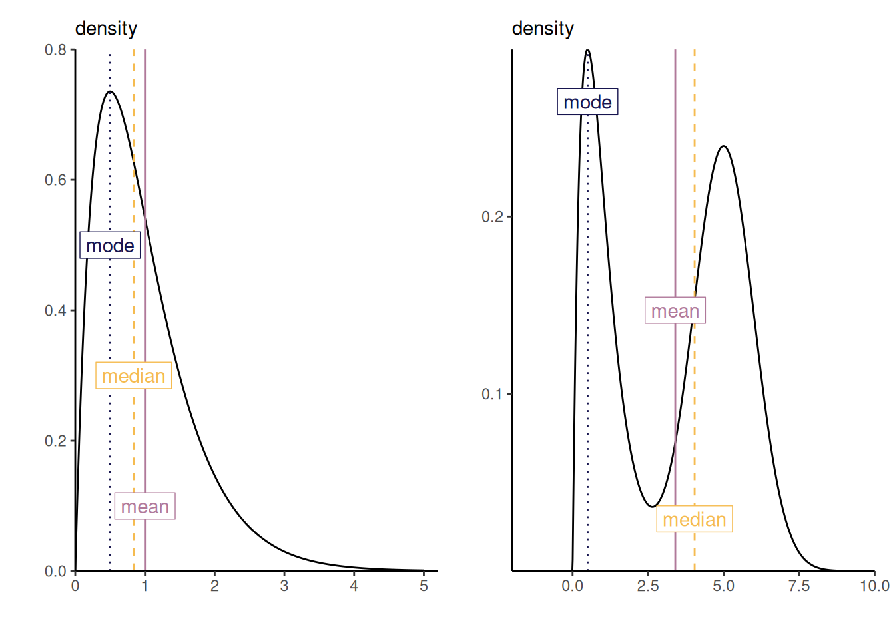
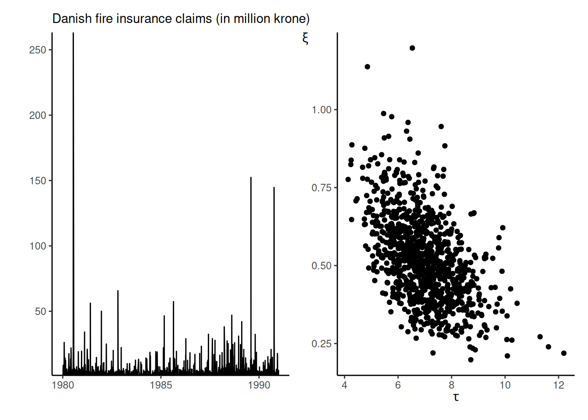
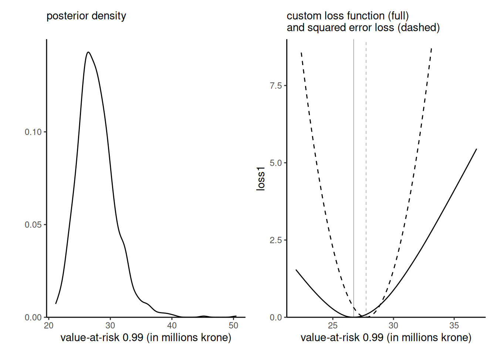
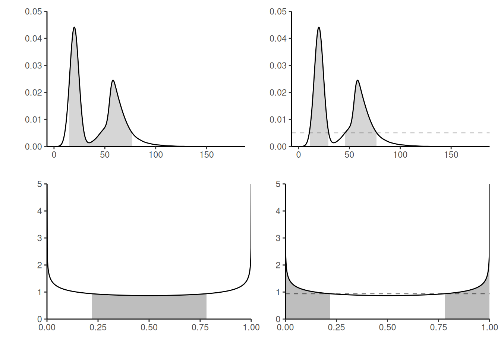

2 Bayesics
The Bayesian paradigm is an inferential framework that is widely used in data science. It builds on likelihood-based inference, offers a natural framework for prediction and for uncertainty quantification. The interpretation is more natural than that of classical (i.e., frequentist) paradigm, and it is more easy to generalized models to complex settings, notably through hierarchical constructions. The main source of controversy is the role of the prior distribution, which allows one to incorporate subject-matter expertise but leads to different inferences being drawn by different practitioners; this subjectivity is not to the taste of many and has been the subject of many controversies.
The Bayesian paradigm includes multiples notions that are not covered in undergraduate introductory courses. The purpose of this chapter is to introduce these concepts and put them in perspective; the reader is assumed to be familiar with basics of likelihood-based inference. We begin with a discussion of the notion of probability, then define priors, posterior distributions, marginal likelihood and posterior predictive distributions. We focus on the interpretation of posterior distributions and explain how to summarize the posterior, leading leading to definitions of high posterior density region, credible intervals, posterior mode for cases where we either have a (correlated) sample from the posterior, or else have access to the whole distribution. Several notions, including sequentiality, prior elicitation and estimation of the marginal likelihood, are mentioned in passing. A brief discussion of Bayesian hypothesis testing (and alternatives) is presented.
Learning objectives:
At the end of the chapter, students should be able to
- define key notions (prior, marginal likelihood, Bayes factor, credible intervals, etc.) of Bayesian inference.
- distinguish between questions that relate to the posterior distribution versus the posterior predictive.
- calculate and compute numerically summaries of posterior distributions (point estimators and credible intervals) given a posterior sample.
- explain some of the conceptual differences between frequentist and Bayesian inference.
2.1 Probability and frequency
In classical (frequentist) parametric statistic, we treat observations \(\boldsymbol{Y}\) as realizations of a distribution whose parameters \(\boldsymbol{\theta}\) are unknown. All of the information about parameters is encoded by the likelihood function.
The interpretation of probability in the classical statistic is in terms of long run frequency, which is why we term this approach frequentist statistic. Think of a fair die: when we state that values \(\{1, \ldots, 6\}\) are equiprobable, we mean that repeatedly tossing the die should result, in large sample, in each outcome being realized roughly \(1/6\) of the time (the symmetry of the object also implies that each facet should be equally likely to lie face up). This interpretation also carries over to confidence intervals: a \((1-\alpha)\) confidence interval either contains the true parameter value or it doesn’t, so the probability level \((1-\alpha)\) is only the long-run proportion of intervals created by the procedure that should contain the true fixed value, not the probability that a single interval contains the true value. This is counter-intuitive to most.
In practice, the true value of the parameter \(\boldsymbol{\theta}\) vector is unknown to the practitioner, thus uncertain: Bayesians would argue that we should treat the latter as a random quantity rather than a fixed constant. Since different people may have different knowledge about these potential values, the prior knowledge is a form of subjective probability. For example, if you play cards, one person may have recorded the previous cards that were played, whereas other may not. They thus assign different probability of certain cards being played. In Bayesian inference, we consider \(\boldsymbol{\theta}\) as random variables to reflect our lack of knowledge about potential values taken. Italian scientist Bruno de Finetti, who is famous for the claim ``Probability does not exist’’, stated in the preface of Finetti (1974):
Probabilistic reasoning — always to be understood as subjective — merely stems from our being uncertain about something. It makes no difference whether the uncertainty relates to an unforseeable future, or to an unnoticed past, or to a past doubtfully reported or forgotten: it may even relate to something more or less knowable (by means of a computation, a logical deduction, etc.) but for which we are not willing or able tho make the effort; and so on […] The only relevant thing is uncertainty — the extent of our knowledge and ignorance. The actual fact of whether or not the events considered are in some sense determined, or known by other people, and so on, is of no consequence.
On page 3, de Finetti continues (Finetti 1974)
only subjective probabilities exist — i.e., the degree of belief in the occurrence of an event attributed by a given person at a given instant and with a given set of information.
2.2 Posterior distribution
We consider a parametric model with parameters \(\boldsymbol{\theta}\) defined on \(\boldsymbol{\Theta} \subseteq \mathbb{R}^p.\) In Bayesian learning, we adjoin to the likelihood \(\mathcal{L}(\boldsymbol{\theta}; \boldsymbol{y}) \equiv p(\boldsymbol{y} \mid \boldsymbol{\theta})\) a prior function \(p(\boldsymbol{\theta})\) that reflects the prior knowledge about potential values taken by the \(p\)-dimensional parameter vector, before observing the data \(\boldsymbol{y}.\) The prior makes \(\boldsymbol{\theta}\) random and the distribution of the parameter reflects our uncertainty about the true value of the model parameters.
In a Bayesian analysis, observations are random variables but inference is performed conditional on the observed sample values. By Bayes’ theorem, our target is therefore the posterior density \(p(\boldsymbol{\theta} \mid \boldsymbol{y}),\) defined as
\[ \underbracket[0.25pt]{p(\boldsymbol{\theta} \mid \boldsymbol{y})}_{\text{posterior}} = \frac{\overbracket[0.25pt]{p(\boldsymbol{y} \mid \boldsymbol{\theta})}^{\text{likelihood}} \times \overbracket[0.25pt]{p(\boldsymbol{\theta})}^{\text{prior}}}{\underbracket[0.25pt]{\int p(\boldsymbol{y} \mid \boldsymbol{\theta}) p(\boldsymbol{\theta}) \mathrm{d} \boldsymbol{\theta}}_{\text{marginal likelihood }p(\boldsymbol{y})}}. \tag{2.1}\]
The posterior \(p(\boldsymbol{\theta} \mid \boldsymbol{y})\) is proportional, as a function of \(\theta,\) to the product of the likelihood and the prior function.
For the posterior to be proper, we need the product of the prior and the likelihood on the right hand side to be integrable as a function of \(\boldsymbol{\theta}\) over the parameter domain \(\boldsymbol{\Theta}.\) The integral in the denominator, termed marginal likelihood or prior predictive distribution and denoted \(p(\boldsymbol{y}) = \mathsf{E}_{\boldsymbol{\theta}}\{p(\boldsymbol{y} \mid \boldsymbol{\theta})\}.\) It represents the distribution of the data before data collection, the respective weights being governed by the prior probability of different parameters values. The denominator of Equation 2.1 is a normalizing constant, making the posterior density integrate to unity. The marginal likelihood plays a central role in Bayesian testing.
If \(\boldsymbol{\theta}\) is low dimensional, numerical integration such as quadrature methods can be used to compute the marginal likelihood.
To fix ideas, we consider next a simple one-parameter model where the marginal likelihood can be computed explicitly.
Example 2.1 (Binomial model with beta prior) Consider a binomial likelihood with probability of success \(\theta \in [0,1]\) and \(n\) trials, \(Y \sim \mathsf{binom}(n, \theta).\) If we take a beta prior, \(\theta \sim \mathsf{beta}(\alpha, \beta)\) and observe \(y\) successes, the posterior is \[\begin{align*} p(\theta \mid y = y) &\propto \binom{n}{y} \theta^y (1-\theta)^{n-y} \frac{\Gamma(\alpha + \beta)}{\Gamma(\alpha) \Gamma(\beta)}\theta^{\alpha-1} (1-\theta)^{\beta-1} \\&\stackrel{\theta}{\propto} \theta^{y+\alpha-1}(1-\theta)^{n-y+\beta-1} \end{align*}\] and is \[\int_{0}^{1} \theta^{y+\alpha-1}(1-\theta)^{n-y+\beta-1}\mathrm{d} \theta = \frac{\Gamma(y+\alpha)\Gamma(n-y+\beta)}{\Gamma(n+\alpha+\beta)},\] a beta function. Since we need only to keep track of the terms that are function of the parameter \(\theta,\) we could recognize directly that the posterior distribution is \(\mathsf{beta}(y+\alpha, n-y+\beta)\) and deduce the normalizing constant from there.
If \(Y \sim \mathsf{binom}(n, \theta),\) the expected number of success is \(n\theta\) and the expected number of failures \(n(1-\theta)\) and so the likelihood contribution, relative to the prior, will dominate as the sample size \(n\) grows.
Another way to see this is to track moments (expectation, variance, etc.) From Definition 1.3, the posterior mean is \[\begin{align*} \mathsf{E}(\theta \mid y) = w\frac{y}{n} + (1-w) \frac{\alpha}{\alpha+\beta}, \qquad w = \frac{n}{n+\alpha + \beta}, \end{align*}\] a weighted average of the maximum likelihood estimator and the prior mean. We can think of the parameter \(\alpha\) (respectively \(\beta\)) as representing the fixed prior number of success (resp. failures). The variance term is \(\mathrm{O}(n^{-1})\) and, as the sample size increases, the likelihood weight \(w\) dominates.
Figure 2.1 shows three different posterior distributions with different beta priors: the first prior, which favors values closer to 1/2, leads to a more peaked posterior density, contrary to the second which is symmetric, but concentrated toward more extreme values near endpoints of the support. The rightmost panel is truncated: as such, the posterior is zero for any value of \(\theta\) beyond 1/2 and so the posterior mode may be close to the endpoint of the prior. The influence of such a prior will not necessarily vanish as sample size and should be avoided, unless there are compelling reasons for restricting the domain.
Remark (Proportionality). Any term appearing in the likelihood times prior function that does not depend on parameters can be omitted since they will be absorbed by the normalizing constant. This makes it useful to compute normalizing constants or likelihood ratios.
Remark. An alternative parametrization for the beta distribution sets \(\alpha=\mu \kappa,\) \(\beta = (1-\mu)\kappa\) for \(\mu \in (0,1)\) and \(\kappa>0,\) so that the model is parametrized directly in terms of mean \(\mu,\) with \(\kappa\) capturing the dispersion.
Remark. A density integrates to 1 over the range of possible outcomes, but there is no guarantee that the likelihood function, as a function of \(\boldsymbol{\theta},\) integrates to one over the parameter domain \(\boldsymbol{\Theta}.\)
For example, the binomial likelihood with \(n\) trials and \(y\) successes satisfies \[\int_0^1 \binom{n}{y}\theta^y(1-\theta)^{n-y} \mathrm{d} \theta = \frac{1}{n+1}.\]
Moreover, the binomial distribution is discrete with support \(0, \ldots, n,\) whereas the likelihood is continuous as a function of the probability of success, as evidenced by Figure 2.2

Definition 2.1 (Bayes factor and model comparison) The marginal likelihood enters in the comparison of different models. Suppose that we have models \(\mathcal{M}_m\) \((m=1, \ldots, M)\) to be compared, with parameter vectors \(\boldsymbol{\theta}^{(m)}\) and data vector \(\boldsymbol{y}.\) Consider \(p_m =\Pr(\mathcal{M}_m)\) the prior probability of the different models under consideration, with \(p_1 + \cdots + p_M = 1.\) The posterior odds for Models \(\mathcal{M}_i\) vs \(\mathcal{M}_j\) are \[\begin{align*} \underbracket[0.25pt]{\frac{\Pr(\mathcal{M}_i \mid \boldsymbol{y})}{\Pr(\mathcal{M}_j \mid \boldsymbol{y})}}_{\text{posterior odds}} = \underbracket[0.25pt]{\frac{p(\boldsymbol{y} \mid \mathcal{M}_i)}{p(\boldsymbol{y} \mid \mathcal{M}_j)}}_{\text{Bayes factor}} \underbracket[0.25pt]{\frac{\Pr(\mathcal{M}_i)}{\Pr(\mathcal{M}_j)}}_{\text{prior odds}} \end{align*}\] where the first term on the right hand side is the Bayes factor for model \(i\) vs \(j,\) denoted \(\mathsf{BF}_{ij}.\) The Bayes factor is the ratio of marginal likelihoods, as \[\begin{align*} p(\boldsymbol{y} \mid \mathcal{M}_i) = \int p(y \mid \boldsymbol{\theta}^{(i)}, \mathcal{M}_i) p( \boldsymbol{\theta}^{(i)} \mid \mathcal{M}_i) \mathrm{d} \boldsymbol{\theta}^{(i)}. \end{align*}\] Values of \(\mathsf{BF}_{ij}>1\) correspond to model \(\mathcal{M}_i\) being more likely than \(\mathcal{M}_j.\)
While Bayes factors are used for model comparison, the answers depend very strongly on the prior \(p( \boldsymbol{\theta}^{(i)} \mid \mathcal{M}_i)\) specified and the latter must be proper as a general rule for the ratio to be well-defined.
The Bayes factor require that we compare the same data, but both likelihood and priors could be different from one model to the next.
Example 2.2 (Bayes factor for the binomial model) The marginal likelihood for the \(Y \mid P=p \sim \mathsf{binom}(n,p)\) model with prior \(P \sim \mathsf{beta}(\alpha, \beta)\) is \[\begin{align*} p_{Y}(y) = \binom{n}{y} \frac{\mathrm{beta}(\alpha + y, \beta + n - y)}{\mathrm{beta}(\alpha, \beta)}. \end{align*}\] where \(\mathrm{beta}(\alpha, \beta) = \Gamma(\alpha)\Gamma(\beta)/\Gamma(\alpha+\beta)\) is the beta function, expressed in terms of gamma functions.
Consider three models with \(Y \mid P^{(i)}=p, \mathcal{M}_i \sim \mathsf{binom}(n, p)\) for \(i=1, 2, 3\) and uniform, point mass and beta priors \(P^{(1)}\sim \mathsf{unif}(0,1),\) \(P^{(2)} \sim \mathsf{beta}(3/2, 3/2)\) and \(P^{(3)}\sim \mathsf{1}_{p=0.5}.\) For \(\mathcal{M}_3,\) the marginal likelihood is simply equal to the binomial distribution with \(p=0.5.\)
If \(n=14,\) but we let instead the number of success varies, the models that put more mass closer to the ratio \(y/n\) will be favored. The uniform prior in model \(\mathcal{M}_1\) will have a higher Bayes factor than model \(\mathcal{M}_2\) or \(\mathcal{M}_3\) for values closer to \(p=0\) or \(p=1,\) but there is mild evidence as shown in Figure 2.3.
# Log of marginal posterior for binom with beta prior (default is uniform)
log_marg_post_beta <- function(n, y, alpha = 1, beta = 1){
lchoose(n, y) + lbeta(alpha + y, beta + n - y) - lbeta(alpha, beta)
}
# Log of Bayes factor
logBF2vs3 <- function(y, n){ # model 2 (beta(1.5,1.5) vs 3 (point mass at 0.5)
log_marg_post_beta(n = n, y = y, alpha = 1.5, beta = 1.5) - dbinom(x = y, size = n, prob = 0.5, log = TRUE)
}

Proposition 2.1 (Sequentiality and Bayesian updating) The likelihood is invariant to the order of the observations if they are independent. Thus, if we consider two blocks of observations \(\boldsymbol{y}_1\) and \(\boldsymbol{y}_2\) \[p(\boldsymbol{\theta} \mid \boldsymbol{y}_1, \boldsymbol{y}_2) = p(\boldsymbol{\theta} \mid \boldsymbol{y}_1) p(\boldsymbol{\theta} \mid \boldsymbol{y}_2),\] so it makes no difference if we treat data all at once or in blocks. More generally, for data exhibiting spatial or serial dependence, it makes sense to consider rather the conditional (sequential) decomposition \[f(\boldsymbol{y}; \boldsymbol{\theta}) = f(\boldsymbol{y}_1; \boldsymbol{\theta}) f(\boldsymbol{y}_2; \boldsymbol{\theta}, \boldsymbol{y}_1) \cdots f(\boldsymbol{y}_n; \boldsymbol{\theta}, \boldsymbol{y}_1, \ldots, \boldsymbol{y}_{n-1})\] where \(f(\boldsymbol{y}_k; \boldsymbol{y}_1, \ldots, \boldsymbol{y}_{k-1})\) denotes the conditional density function given observations \(\boldsymbol{y}_1, \ldots, \boldsymbol{y}_{k-1}.\)
By Bayes’ rule, we can consider updating the posterior by adding terms to the likelihood, noting that \[\begin{align*} p(\boldsymbol{\theta} \mid \boldsymbol{y}_1, \boldsymbol{y}_2) \propto p(\boldsymbol{y}_2 \mid \boldsymbol{y}_1, \boldsymbol{\theta}) p(\boldsymbol{\theta} \mid \boldsymbol{y}_1) \end{align*}\] which amounts to treating the posterior \(p(\boldsymbol{\theta} \mid \boldsymbol{y}_1)\) as a prior. If data are exchangeable, the order in which observations are collected and the order of the belief updating is irrelevant to the full posterior. Figure 2.4 shows how the posterior becomes gradually closer to the scaled likelihood as we increase the sample size, and the posterior mode moves towards the true value of the parameter (here 0.3).

Example 2.3 (Numerical integration) While we can calculate analytically the value of the normalizing constant for the beta-binomial model, we could also for arbitrary priors use numerical integration or Monte Carlo methods in the event the parameter vector \(\boldsymbol{\theta}\) is low-dimensional.
While estimation of the normalizing constant is possible in simple models, the following highlights some challenges that are worth keeping in mind. In a model for discrete data (that is, assigning probability mass to a countable set of outcomes), the terms in the likelihood are probabilities and thus the likelihood becomes smaller as we gather more observations (since we multiply terms between zero or one). The marginal likelihood term becomes smaller and smaller, so it’s reciprocal is big and this can lead to arithmetic underflow.
y <- 6L # number of successes
n <- 14L # number of trials
alpha <- beta <- 1.5 # prior parameters
unnormalized_posterior <- function(theta){
theta^(y+alpha-1) * (1-theta)^(n-y + beta - 1)
}
integrate(f = unnormalized_posterior,
lower = 0,
upper = 1)1.066906e-05 with absolute error < 1e-12# Compare with known constant
beta(y + alpha, n - y + beta)[1] 1.066906e-05# Monte Carlo integration
mean(unnormalized_posterior(runif(1e5)))[1] 1.064067e-05When \(\boldsymbol{\theta}\) is high-dimensional, the marginal likelihood is intractable. This is one of the main challenges of Bayesian statistics and the popularity and applicability has grown drastically with the development and popularity of numerical algorithms, following the publication of Geman and Geman (1984) and Gelfand and Smith (1990). Markov chain Monte Carlo methods circumvent the calculation of the denominator by drawing approximate samples from the posterior.
Example 2.4 (Importance of selling format) Duke and Amir (2023) consider the difference between integrated and sequential format for sales. The sellingformat dataset contains \(n=397\) observations split into two groups: quantity-integrated decision (decide the amount to buy) and quantity-sequential (first select buy, then select the amount). Participants of the study were randomly allocated to either of these two format and their decision, either buy, 1, or do not buy 0, is recorded.
0) or did buy (1) products as a function of experimental condition.
| 0 | 1 | |
|---|---|---|
| quantity-integrated | 152 | 46 |
| quantity-sequential | 176 | 23 |
We consider the number of purchased out of the total, treating records as independent Bernoulli observations with a flat (uniform prior).
With a beta-binomial model, the posterior for the probability of buying is \(\mathsf{beta}(47, 153)\) for quantity-integrated and \(\mathsf{beta}(24, 177)\) for quantity-sequential. We can compute the posterior of the odds ratio, \[O = \frac{\Pr(Y=1 \mid \texttt{integrated})}{\Pr(Y=0 \mid \texttt{integrated})}\frac{\Pr(Y=0 \mid \texttt{sequential})}{\Pr(Y=1 \mid \texttt{sequential})},\] by simulating independent draws from the posteriors of each condition and computing the odds ratio.
data(sellingformat, package = "hecbayes")
contingency <- with(sellingformat, table(format, purchased))
# Posterior draws of the parameters
post_p_int <- rbeta(n = 1e4, shape1 = 47, shape2 = 153)
post_p_seq <- rbeta(n = 1e4, shape1 = 24, shape2 = 177)
# Reparametrization
post_odds_int <- (post_p_int / (1 - post_p_int))
post_odds_seq <- (post_p_seq / (1 - post_p_seq))
post_oddsratio <- post_odds_int / post_odds_seqFigure 2.5 shows the posterior of the probability of buying for each group, and the odds. It is clear that the integrated format leads to much more sales in the experiment, with a posterior ratio exceeding 1 with probability \(99.89\%.\)

2.3 Posterior predictive distribution
Prediction in the Bayesian paradigm is obtained by considering the posterior predictive distribution, \[\begin{align*} p(y_{\text{new}} \mid \boldsymbol{y}) = \int_{\Theta} p(y_{\text{new}} \mid \boldsymbol{\theta}) p(\boldsymbol{\theta} \mid \boldsymbol{y}) \mathrm{d} \boldsymbol{\theta} \end{align*}\] In a simulation context, we generate one new dataset (or observation) for each posterior draw \(\boldsymbol{\theta}\) from the posterior \(p(\boldsymbol{\theta} \mid \boldsymbol{y}).\)
Given draws from the posterior distribution, say \(\boldsymbol{\theta}_b\) \((b=1, \ldots, B),\) we sample from each a new realization from the distribution appearing in the likelihood \(p(y_{\text{new}} \mid \boldsymbol{\theta}_b).\) This is different from the frequentist setting, which fixes the value of the parameter to some estimate \(\widehat{\boldsymbol{\theta}}\); by contrast, the posterior predictive, here a beta-binomial distribution \(\mathsf{beta binom}(n, \alpha + y, n - y + \beta),\) carries over the uncertainty so will typically be wider and overdispersed relative to the corresponding binomial model. This can be easily seen from the left-panel of Figure 2.6, which contrasts the binomial mass function evaluated at the maximum likelihood estimator \(\widehat{\theta}=6/14\) with the posterior predictive.
npost <- 1e4L
# Sample draws from the posterior distribution
post_samp <- rbeta(n = npost, y + alpha, n - y + beta)
# For each draw, sample new observation
post_pred <- rbinom(n = npost, size = n, prob = post_samp)

Given the \(\mathsf{beta}(a, b)\) posterior with \(a=y + \alpha\) and \(b=n-y + \beta,\) the predictive distribution of \(Y_{\text{new}}\) for fixed \(n_{\text{new}}\) number of trials is beta-binomial with mass function \[\begin{align*} p(y_{\text{new}}\mid y) &= \int_0^1 \binom{n_{\text{new}}}{y_{\text{new}}} \frac{\theta^{a + y_{\text{new}}-1}(1-\theta)^{b + n_{\text{new}} - y_{\text{new}}-1}}{ \mathrm{beta}(a, b)}\mathrm{d} \theta \\&= \binom{n_{\text{new}}}{y_{\text{new}}} \frac{\mathrm{beta}(a + y_{\text{new}}, b + n_{\text{new}} - y_{\text{new}})}{\mathrm{beta}(a, b)} \end{align*}\]
Example 2.5 (Posterior predictive distribution of univariate Gaussian with known mean) Consider an \(n\) sample of independent and identically distributed Gaussian, \(Y_i \sim \mathsf{Gauss}(0, \tau^{-1})\) (\(i=1, \ldots, n\)), where we assign a gamma prior on the precision \(\tau \sim \mathsf{gamma}(\alpha, \beta).\) The posterior is \[\begin{align*} p(\tau \mid \boldsymbol{y}) \stackrel{\tau}{\propto} \prod_{i=1}^n \tau^{n/2}\exp\left(-\tau \frac{\sum_{i=1}^n{y_i^2}}{2}\right) \times \tau^{\alpha-1} \exp(-\beta \tau) \end{align*}\] and rearranging the terms to collect powers of \(\tau,\) etc. we find that the posterior for \(\tau\) must also be gamma, with shape parameter \(\alpha^* = \alpha + n/2\) and rate \(\beta^* = \beta + \sum_{i=1}^n y_i^2/2.\)
The posterior predictive is \[\begin{align*} p(y_{\text{new}} \mid \boldsymbol{y}) &= \int_0^\infty \frac{\tau^{1/2}}{(2\pi)^{1/2}}\exp(-\tau y_{\text{new}}^2/2) \frac{\beta^{*\alpha^*}}{\Gamma(\alpha^*)}\tau^{\alpha^*-1}\exp(-\beta^* \tau) \mathrm{d} \tau \\&= (2\pi)^{-1/2} \frac{\beta^{*\alpha^*}}{\Gamma(\alpha^*)} \int_0^\infty\tau^{\alpha^*-1/2} \exp\left\{- \tau (y_{\text{new}}^2/2 + \beta^*)\right\} \mathrm{d} \tau \\&= (2\pi)^{-1/2} \frac{\beta^{*\alpha^*}}{\Gamma(\alpha^*)} \frac{\Gamma(\alpha^* + 1/2)}{(y_{\text{new}}^2/2 + \beta^*)^{\alpha^*+1/2}} \\&= \frac{\Gamma\left(\frac{2\alpha^* + 1}{2}\right)}{\sqrt{2\pi}\Gamma\left(\frac{2\alpha^*}{2}\right)\beta^{*1/2}} \left( 1+ \frac{y_{\text{new}}^2}{2\beta^*}\right)^{-\alpha^*-1/2} \\&= \frac{\Gamma\left(\frac{2\alpha^* + 1}{2}\right)}{\sqrt{\pi}\sqrt{ 2\alpha^*}\Gamma\left(\frac{2\alpha^*}{2}\right)(\beta^*/\alpha^*)^{1/2}} \left( 1+ \frac{1}{2\alpha^*}\frac{y_{\text{new}}^2}{(\beta^*/\alpha^*)}\right)^{-\alpha^*-1/2} \end{align*}\] which entails that \(Y_{\text{new}}\) is a scaled Student-\(t\) distribution with scale \((\beta^*/\alpha^*)^{1/2}\) and \(2\alpha+n\) degrees of freedom. This example also exemplifies the additional variability relative to the distribution generating the data: indeed, the Student-\(t\) distribution is more heavy-tailed than the Gaussian, but since the degrees of freedom increase linearly with \(n,\) the distribution converges to a Gaussian as \(n \to \infty,\) reflecting the added information as we collect more and more data points and the variance gets better estimated through \(\sum_{i=1}^n y_i^2/n.\)
2.4 Summarizing posterior distributions
The output of the Bayesian learning problem will be either of:
- a fully characterized distribution
- a numerical approximation to the posterior distribution (pointwise)
- an exact or approximate sample drawn from the posterior distribution
In the first case, we will be able to directly evaluate quantities of interest if there are closed-form expressions for the latter, or else we could draw samples from the distribution and evaluate them via Monte-Carlo. In case of numerical approximations, we will need to resort to numerical integration or otherwise to get our answers.
Often, we will also be interested in the marginal posterior distribution of each component \(\theta_j\) in turn (\(j=1, \ldots, J\)). To get these, we carry out additional integration steps, \[p(\theta_j \mid \boldsymbol{y}) = \int p(\boldsymbol{\theta} \mid \boldsymbol{y}) \mathrm{d} \boldsymbol{\theta}_{-j}.\] With a posterior sample, this is trivial: it suffices to keep the column corresponding to \(\theta_j\) and discard the others.
Most of the field of Bayesian statistics revolves around the creation of algorithms that either circumvent the calculation of the normalizing constant (notably using Monte Carlo and Markov chain Monte Carlo methods) or else provide accurate numerical approximation of the posterior pointwise, including for marginalizing out all but one parameters (integrated nested Laplace approximations, variational inference, etc.) The target of inference is the whole posterior distribution, a potentially high-dimensional object which may be difficult to summarize or visualize. We can thus report only characteristics of the the latter.
The choice of point summary to keep has it’s root in decision theory.
Definition 2.2 (Loss function) A loss function \(c(\boldsymbol{\theta}, \boldsymbol{\upsilon})\) is a mapping from \(\mathbb{R}^p \to \mathbb{R}^k\) that assigns a weight to each value of \(\boldsymbol{\theta},\) corresponding to the regret or loss arising from choosing this value. The corresponding point estimator \(\widehat{\boldsymbol{\upsilon}}\) is the minimizer of the expected loss,
\[\begin{align*} \widehat{\boldsymbol{\upsilon}} &= \mathop{\mathrm{argmin}}_{\boldsymbol{\upsilon}}\mathsf{E}_{\boldsymbol{\Theta} \mid \boldsymbol{Y}}\{c(\boldsymbol{\theta}, \boldsymbol{v})\} \\&=\mathop{\mathrm{argmin}}_{\boldsymbol{\upsilon}} \int_{\mathbb{R}^d} c(\boldsymbol{\theta}, \boldsymbol{\upsilon})p(\boldsymbol{\theta} \mid \boldsymbol{y}) \mathrm{d} \boldsymbol{\theta} \end{align*}\]
For example, in a univariate setting, the quadratic loss \(c(\theta, \upsilon) = (\theta-\upsilon)^2\) returns the posterior mean, the absolute loss \(c(\theta, \upsilon)=|\theta - \upsilon|\) returns the posterior median and the 0-1 loss \(c(\theta, \upsilon) = \mathrm{I}(\upsilon \neq \theta)\) returns the posterior mode.
For example consider the quadratic loss function which is differentiable. Provided we can interchange differential operator and integral sign, \[\begin{align*} 0&= \int_{\mathbb{R}} \frac{\partial (\upsilon-\theta)^2}{\partial \upsilon} p(\theta \mid \boldsymbol{y}) \mathrm{d} \theta \\&= \int_{\mathbb{R}} \frac{\partial 2(\upsilon-\theta)}{\partial \upsilon} p(\theta \mid \boldsymbol{y}) \mathrm{d} \theta \\& = 2\upsilon - 2 \mathsf{E}(\theta) \end{align*}\] which is minimized when \(\widehat{\upsilon}=\mathsf{E}_{\Theta \mid \boldsymbol{Y}}(\theta)\).
All of these point estimators are central tendency measures, but some may be more adequate depending on the setting as they can correspond to potentially different values, as shown in the left-panel of Figure 2.7. The choice is application specific: for multimodal distributions, the mode is likely a better choice.
If we know how to evaluate the distribution numerically, we can optimize to find the mode or else return the value for the pointwise evaluation on a grid at which the density achieves it’s maximum. The mean and median would have to be evaluated by numerical integration if there is no closed-form expression for the latter.
If we have rather a sample from the posterior with associated posterior density values, then we can obtain the mode as the parameter combination with the highest posterior, the median from the value at rank \(\lfloor n/2\rfloor\) and the mean through the sample mean of posterior draws.

The loss function is often a functional (meaning a one-dimensional summary) from the posterior. The following example shows how it reduces a three-dimensional problem into a single risk measure.
Example 2.6 (Value-at-risk for Danish insurance losses) In extreme value, we are often interested in assessing the risk of events that are rare enough that they lie beyond the range of observed data. To provide a scientific extrapolation, it often is justified to fit a generalized Pareto distribution to exceedances of \(Z=Y-u,\) for some user-specified threshold \(u\) which is often taken as a large quantile of the distribution of \(Z \sim \mathsf{gen. Pareto}(\tau, \xi);\) see Definition 1.11
Insurance companies provide coverage in exchange for premiums, but need to safeguard themselves against very high claims by buying reinsurance products. These risks are often communicated through the value-at-risk (VaR), a high quantile exceeded with probability \(p.\) We model Danish fire insurance claim amounts for inflation-adjusted data collected from January 1980 until December 1990 that are in excess of a million Danish kroner, found in the evir package and analyzed in Example 7.23 of McNeil, Frey, and Embrechts (2005). These claims are denoted \(Y\) and there are 2167 observations.
We fit a generalized Pareto distribution to exceedances above 10 millions krones, keeping 109 observations or roughly the largest 5% of the original sample. Preliminary analysis shows that we can treat data as roughly independent and identically distributed and goodness-of-fit diagnostics (not shown) for the generalized Pareto suggest that the fit is adequate for all but the three largest observations, which are (somewhat severely) underestimated by the model.

The generalized Pareto model only describes the \(n_u\) exceedances above \(u=10,\) so we need to incorporate in the likelihood a binomial contribution for the probability \(\zeta_u\) of exceeding the threshold \(u.\) The log likelihood for the full model for \(y_i>u\) is \[\begin{align*} \ell(\tau, \xi, \zeta_u) &\propto -109 \log \tau + \sum_{i=1}^{109} (1+1/\xi)\log\left(1+\xi\frac{y_i-10}{\tau}\right)_{+} + \\& \quad 109\log \zeta_u + 2058 \log(1-\zeta_u), \end{align*}\] Provided that the priors for \((\tau, \xi)\) are independent of those for \(\zeta_u,\) the posterior also factorizes as a product, so \(\zeta_u\) and \((\tau, \xi)\) are a posteriori independent.
Suppose for now that we set a \(\mathsf{beta}(0.5, 0.5)\) prior for \(\zeta_u\) and a non-informative prior for the generalized Pareto parameters.
We consider the modelling of insurance losses exceeding \(u=10\) millions krones using a generalized Pareto distribution to the danish fire insurance data with some prior; see Definition 1.11 for the model. The model has three parameters: the scale \(\tau\), the shape \(\xi\) and the probability of exceeding the threshold \(\zeta_u\).
Our aim is to evaluate the posterior distribution for the value-at-risk, the \(\alpha\) quantile of \(Y\) for high values of \(\alpha\) and see what point estimator one would obtain depending on our choice of loss function. For any \(\alpha > 1-\zeta_u,\) the \(q_{\alpha}\) can be written in terms of the generalized Pareto survival function times the probability of exceedance above the threshold, \[\begin{align*}
1- \alpha &= \Pr(Y > q_\alpha \mid Y > u) \Pr(Y > u)
\\ &= \left(1+\xi \frac{q_{\alpha}-u}{\tau}\right)_{+}^{-1/\xi}\zeta_u
\end{align*}\] and solving for \(q_{\alpha}\) gives \[\begin{align*}
q_{\alpha} = u+ \frac{\tau}{\xi} \left\{\left(\frac{\zeta_u}{1-\alpha}\right)^\xi-1\right\}.
\end{align*}\] We obtained, using tools that will be discussed in Example 4.3, a matrix post_samp that contains exact samples from the posterior distribution of \((\tau, \xi, \zeta_u).\) To obtain the posterior distribution of the \(\alpha\) quantile, \(q_{\alpha},\) it thus suffices to plug in each posterior sample and evaluate the function: the uncertainty is carried over from the simulated values of the parameters to those of the quantile \(q_{\alpha}.\) The left panel of Figure 2.9 shows the posterior density estimate of the \(\mathsf{VaR}(0.99)\) along with the maximum a posteriori (mode) of the latter.
Suppose that we prefer to under-estimate the value-at-risk rather than overestimate: this could be captured by the custom loss function \[\begin{align*} c(q, q_0) = \begin{cases} 0.5(0.99q - q_0), & q > q_0 \\ 0.75(q_0 - 1.01q), & q < q_0. \end{cases} \end{align*}\] For a given value of the value-at-risk \(q_0\) evaluated on a grid, we thus compute \[\begin{align*} r(q_0) = \int_{\boldsymbol{\Theta}}c(q(\boldsymbol{\theta}), q_0) p (\boldsymbol{\theta} \mid \boldsymbol{y}) \mathrm{d} \boldsymbol{\theta} \end{align*}\] and we seek to minimize the risk, \(\widehat{q} =\mathrm{argmin}_{q_0 \in \mathbb{R}_{+}} r(q_0).\) The value returned that minimizes the loss, shown in Figure 2.9, is to the left of the posterior mean for \(q_\alpha.\)
# Compute value at risk from generalized Pareto distribution quantile fn
VaR_post <- with(post_samp, # data frame of posterior draws
revdbayes::qgp( # with columns 'probexc', 'scale', 'shape'
p = 0.01/probexc,
loc = 10,
scale = scale,
shape = shape,
lower.tail = FALSE))
# Loss function
loss <- function(qhat, q){
mean(ifelse(q > qhat,
0.5*(0.99*q-qhat),
0.75*(qhat-1.01*q)))
}
# Create a grid of values over which to estimate the loss for VaR
nvals <- 101L
VaR_grid <- seq(
from = quantile(VaR_post, 0.01),
to = quantile(VaR_post, 0.99),
length.out = nvals)
# Create a container to store results
risk <- numeric(length = nvals)
for(i in seq_len(nvals)){
# Compute integral (Monte Carlo average over draws)
risk[i] <- loss(q = VaR_post, qhat = VaR_grid[i])
}

To communicate uncertainty, we may resort to credible regions and intervals.
Definition 2.3 A \((1-\alpha)\) credible region (or credible interval in the univariate setting) is a set \(\mathcal{S}_\alpha\) such that, with probability level \(\alpha,\) \[\begin{align*} \Pr(\boldsymbol{\theta} \in \mathcal{S}_\alpha \mid \boldsymbol{Y}=\boldsymbol{y}) = 1-\alpha \end{align*}\]
These intervals are not unique, as are confidence sets. In the univariate setting, the central or equitailed interval are the most popular, and easily obtained by considering the \(\alpha/2, 1-\alpha/2\) quantiles. These are easily obtained from samples by simply taking empirical quantiles. An alternative, highest posterior density credible sets, which may be a set of disjoint intervals obtained by considering the parts of the posterior with the highest density, may be more informative. The top panel Figure 2.10 shows two extreme cases in which these intervals differ: the distinction for a bimodal mixture distribution, and a even more striking difference for 50% credible intervals for a symmetric beta distribution whose mass lie near the endpoints of the distribution, leading to no overlap between the two intervals.
set.seed(2023)
postsamp <- rbeta(n = 1000, shape1 = 0.5, shape2 = 0.2)
alpha <- 0.11
# Compute equitailed interval bounds
quantile(postsamp, probs = c(alpha/2, 1-alpha/2)) 5.5% 94.5%
0.0246807 0.9999980 qbeta(p = c(alpha/2, 1-alpha/2), shape1 = 0.5, shape2 = 0.2)[1] 0.02925205 0.99999844# Highest posterior density intervals
hdiD <- HDInterval::hdi(density(postsamp), credMass = 1-alpha, allowSplit = TRUE)The equitailed intervals for a known posterior can be obtained directly from the quantile function or via Monte Carlo simply by querying sample quantiles. The HPD region is more complicated to obtain and requires dedicated software, which in the above case may fail to account for the support of the posterior!

Summary:
- Bayesians treat both parameter and observations as random, the former due to uncertainty about the true value. Inference is performed conditional on observed data, and summarized in the posterior.
- Bayesians specify both a prior for the parameter, and a likelihood specifying the data generating mechanism. It is thus an extension of likelihood-based inference.
- Information from the prior is updated in light of new data, which is encoded by the likelihood. Sequential updating leads.
- Under weak conditions on the prior, large-sample behaviour of Bayesian and frequentist.
- Bayesian inference is complicated by the fact that there is more often than not no closed-form expression for the posterior distribution. Evaluation of the normalizing constant, the so-called marginal likelihood, is challenging, especially in high dimensional settings.
- Rather than hypothesis testing, Bayesian methods rely on the posterior distribution of parameters, or on Bayes factor for model comparisons.
- The posterior predictive distribution, used for model assessment and prediction, and it has a higher variance than the data generating distribution from the likelihood, due to parameter uncertainty.
- Bayesians typically will have approximations to the posterior distribution, or samples drawn from it.
- Loss functions can be used to summarize a posterior distribution into a numerical summary of interest, which may vary depending on the objective.
- Uncertainty is reflected by credible sets or credible intervals, which encode the posterior probability that the true value \(\boldsymbol{\theta}\) belongs to the set.